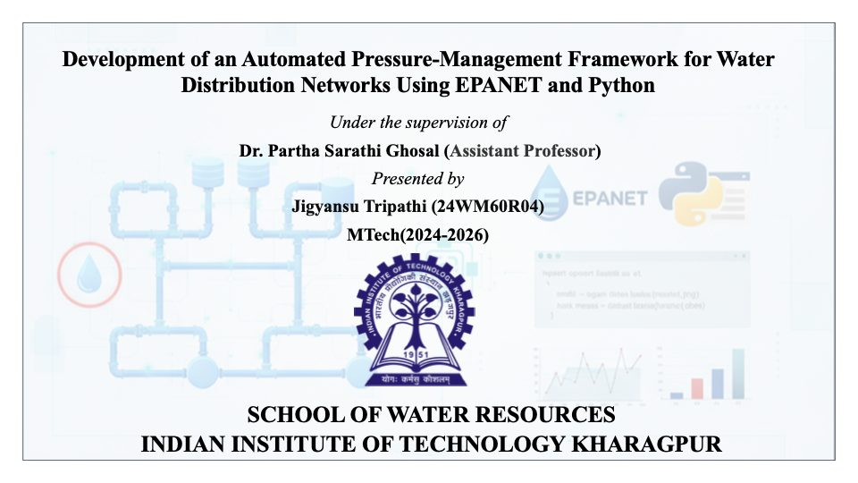

Hydraulic simulation and pressure management framework for water distribution networks
- Built a Python-integrated EPANET framework that generates scenarios and analyses results automatically.
- Designed and tested pressure management strategies (PRVs, pump operations, demand variations) to improve service reliability.
- Applied it to a medium-scale network to evaluate pressure optimisation and leakage reduction.